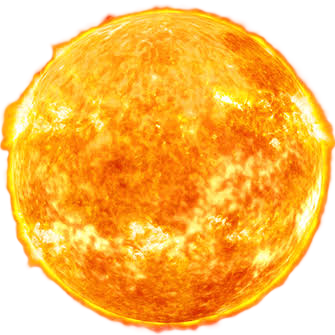

Folha A4 (Sup. Esquerda)
Folha A4 (Sup. Direita)
Folha A4 (Inf. Esquerda)
Folha A4 (Inf. Direita)

SOL (Início)
🔵 Operações e Números
🟣 Frações
🟢 Porcentagem e Decimais
🟠 Geometria e Medidas
📜 Manual do Professor & Regras do Jogo
Objetivo: Partir do Sol no centro do tabuleiro, navegar pelo Sistema Solar superando desafios matemáticos de cálculo mental do 6º ano, e chegar ao planeta Netuno!
Dinâmica: Cada jogador lança um dado. Na casa em que parar, responde à carta correspondente à cor da casa. Se acertar, permanece; se errar, recua 1 casa. Ao parar em um Planeta, compra uma carta Bônus/Ônus baseada na astronomia do astro.